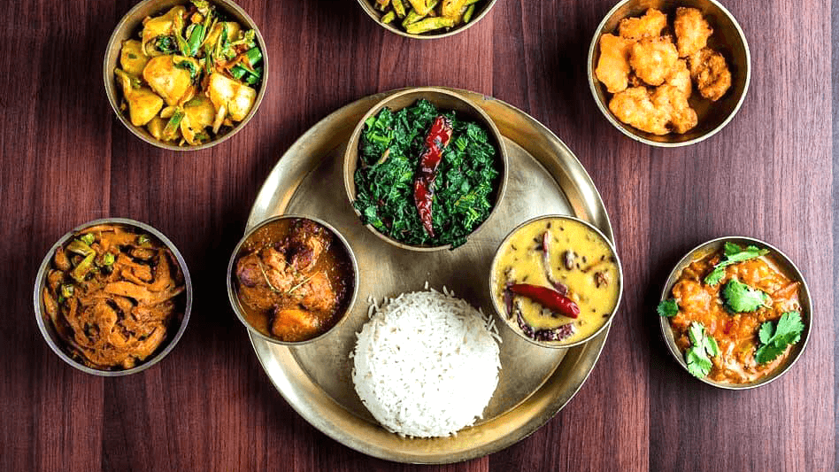
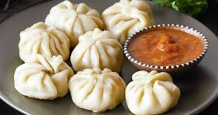
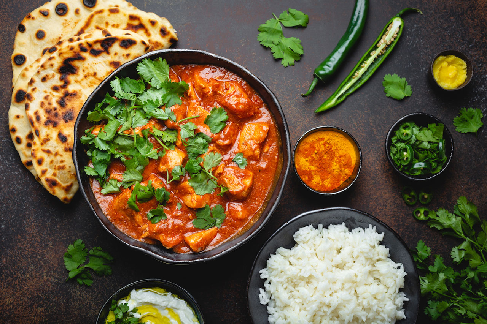

Our Menus
1. Thakali Khana Set
The Thakali are the people originated from the Thak Khola region of the Mustang District in Nepal. Thakali meal consists of locally grown buckwheat, barley, millet, rice, maize and dal. A kind of dal is also made from the dried, ground buckwheat leaves. Also, other special pickles, gundruk, and ghee are also included. Thakali meal is collectively made up of these all food items.
Price: 17€
2. Momo
Momo is a type of Tibetan & Nepali dumpling dish and is popular in Tibet and Nepal. Momo is found in the cuisines of Nepal & Tibet. It is similar to baozi, jiaozi and mantou in Chinese cuisine, buuz in Mongolian cuisine, gyoza in Japanese cuisine, mandu in Korean cuisine and manti in Turkic cuisines, albeit heavily influenced by the cuisine of the Indian subcontinent with Indian spices and herbs.
Price: 10€
3. Chicken Tikka Masala
Chicken tikka masala is a dish consisting of roasted marinated chicken chunks (chicken tikka) in spiced curry sauce. The curry is usually creamy and orange-coloured. The dish was popularized by cooks from the Indian subcontinent living in Great Britain. It is offered at restaurants around the world and was described by former UK foreign secretary Robin Cook as "a true British national dish." It is also the most "English" food connected with Google searches.
Price: 12€
